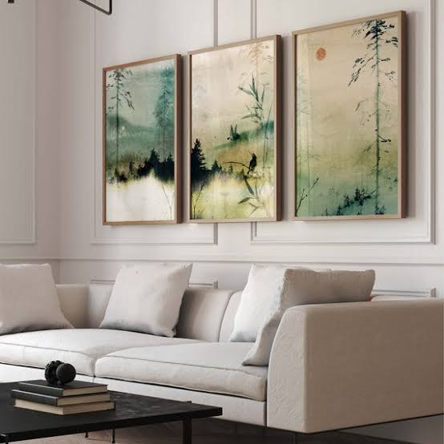

The ALAYRA set is one of the most widely circulated versions of this exact idea: six 8x10-inch prints, minimalist mountain and rising-sun line art, printed on matte vinyl, sold with adhesive mounting dots so no frames or drilling are required.
It's a low-commitment purchase by design. The more useful question isn't whether it looks good in a listing photo — it does — but whether it holds up as a print, physically, once it's on a wall.
What You're Actually Getting
The set includes six individual 8x10-inch prints, unframed, printed on matte-finish vinyl material rather than canvas or fine art paper.
This is a meaningful distinction worth being upfront about: vinyl prints are more resistant to humidity and won't tear as easily as thin paper, but they also don't have the texture or the light-catching depth of a canvas or cotton-rag print.
Under close inspection, particularly in direct light, the surface reads as flatter than a canvas print at a similar visual distance.
The line-art style itself — reduced mountain silhouettes, a circular sun motif, thin continuous linework — is intentionally simple, which works in the print's favor.
Minimalist line art is far more forgiving of lower-cost printing processes than a detailed photograph or a densely colored illustration would be, because there's very little fine detail or color gradient for print quality to fall short on.
Mounting: The Actual Selling Point
The included adhesive dots are arguably the more relevant feature than the art itself, from a practical standpoint.
No-frame, no-drill wall art solves a real problem for renters across Europe — many rental agreements in the UK, Germany, and the Netherlands restrict wall damage, and a six-piece set that goes up and comes down without patching plaster is functionally valuable independent of the artwork's design merit.
That said, adhesive mounting has real limits.
It performs reliably on smooth painted walls, less reliably on textured plaster, wallpaper, or older paint that's beginning to flake — and removal, while generally clean, can occasionally lift a thin layer of paint on softer or older wall finishes.
Testing one dot in a low-visibility spot before committing the full set is a sensible precaution the listing doesn't mention.

Where This Kind of Set Genuinely Works
A grid of six small, visually consistent prints solves a specific styling problem: filling a large blank wall — above a bed, a sofa, or a desk — without committing to a single large (and usually far more expensive) statement piece.
The repetition of a limited color palette and consistent line weight across all six prints is what makes the grid read as intentional rather than mismatched, and that consistency is something this set delivers reliably, since all six come from the same production run.
ALAYRA Japandi Home Decor
Mountain Line Art, Set of 6 8x10" unframed · Matte vinyl print · Adhesive mounting dots included.
Check Current Price →Where It Falls Short
Not a long-term art investment. This is decor, not an art acquisition — the vinyl print material and mass production mean it won't hold up to the kind of scrutiny (or resale value) of a limited edition print or original piece.
That's a reasonable trade-off at this price, but worth naming plainly rather than dressing it up.
Fading with prolonged direct sunlight. Vinyl prints can lose some color saturation over extended exposure to direct sun, more so than UV-protected canvas or framed-behind-glass prints.
Limited to one aesthetic direction. Because the six prints are sold as a fixed set with a single visual theme, there's no flexibility to swap individual pieces if only some of the motifs suit your space — it's a full-set or nothing purchase.
Who This Actually Suits
This set makes the most sense for renters, people furnishing a room gradually, or anyone who wants a large wall filled quickly and affordably without a multi-week custom-framing process.
It's a strong low-commitment way to test whether a minimalist, nature-line-art direction actually works in a specific room before investing in a more permanent, higher-cost piece.
It makes less sense as a room's sole design statement in a space meant to feel curated and collected over time, or for anyone who wants pieces they can rearrange individually rather than as a fixed grid.
Our Technical Verdict
Visual consistency across the set: ★★★★★
Print material quality (vinyl): ★★★☆☆
Mounting convenience: ★★★★★
Durability under direct sunlight: ★★★☆☆
Value for the price point: ★★★★★
Flexibility for individual placement: ★★☆☆☆
Hype-to-substance ratio: honest for what it is. This isn't marketed as fine art, and it doesn't need to be evaluated as such — its actual job is filling wall space with a cohesive, low-commitment visual moment, and it does that job reliably.
The most accurate description: a well-executed convenience product — the value is in the no-damage mounting system and the visual consistency of the set, not in print craftsmanship.
The Intentional Consumption Angle
A set like this is a useful example of choosing the right tool for a temporary stage of a room, rather than defaulting to either extreme — skipping wall decor entirely, or overcommitting to an expensive piece before knowing if the aesthetic direction actually suits the space.
Six low-cost prints that can come down cleanly in a year, once you know what you actually want on that wall long-term, is a genuinely intentional decision — not a compromise.
FAQ
Will adhesive wall art damage my walls or rental deposit?
On smooth painted walls, adhesive mounting dots typically remove cleanly. On textured
plaster, wallpaper, or older/flaking paint, there's a higher risk of minor paint lift.
Testing a single dot in an inconspicuous spot first is recommended.
Is vinyl print wall art good quality?
Vinyl prints are durable and humidity-resistant but have less visual depth and texture than
canvas or fine art paper. For minimalist line-art styles, this trade-off is barely
noticeable at normal viewing distance.
How do I arrange a 6-piece print set on a wall?
A symmetrical grid (2x3 or 3x2) with even spacing is the most common and reliably balanced
layout for sets like this, and matches how the prints are typically designed to be viewed
together.
Does wall art fade over time?
Vinyl and standard poster prints can lose color saturation with prolonged direct sunlight
exposure. Placing prints away from direct sun, or behind glass if framed, significantly
slows fading.
Is a print set a good alternative to a single large art piece?
For filling a large wall affordably and without long-term commitment, yes. For a room meant
to feel like a considered, singular design statement, a well-chosen individual piece
typically has more impact.
Affiliate disclosure: This article contains Amazon affiliate links. See our Affiliate Disclosure and Editorial Policy for details.